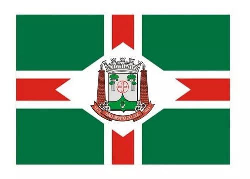

About Me
My name is Murillo de Jesus. I was born in Porto Alegre (Rio Grande do Sul, Brazil) and now live with my family in São Bento do Sul (Santa Catarina - Brazil).
I work as an suport of systems at a tecnology firm, it's one of the best things that i changed to do, in my position i need to control my agenda and plan during the week. I have contact with a lot of clients and collaborators
Some of my favorites hobbies are play violin, ride a bike and run. I love my familie and they are essencial in my life, I believe that when we are together, anything is possible and can be better.
So if you want to talk with me, will be a pleasure, I'm Murillo and you? Who you are?
São bento do Sul
São Bento do Sul it's a brazilian city located in north of the state of Santa Catarina. Your population are 86.317 inhabitants, as estimated by IBGE publication on august 2021. The distance about state capital (Florianópolis) is 250 kilometers.
São Bento do Sul history are connected with the Dona Francisca cologne at 1849, in Hamburgo, organized on homonymous port city, in Germany. About the Dona Francisca cologne evolution, in some extensions are the river São Bento, that later has founded the city of São Bento do Sul.
Initialy, the direction of Dona Francisca Cologne had try established a center located in São Miguel, named Campo Alegre, but it soon became clear that the land was not feritile, that change the plans for the River São Bento Margins.